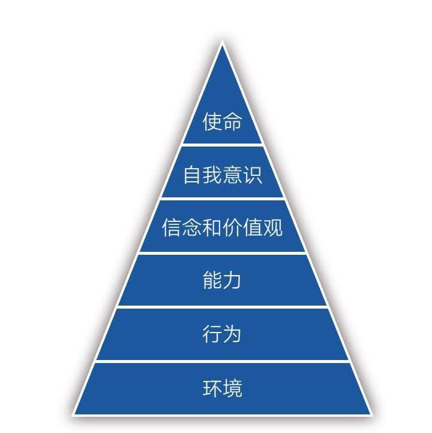
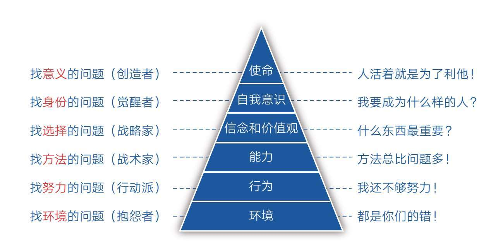
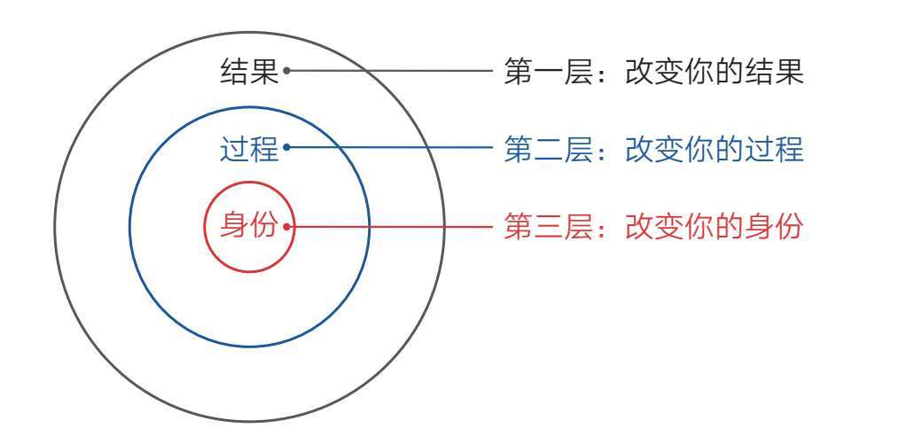
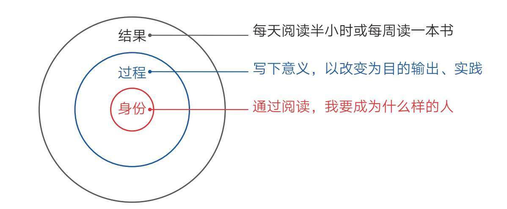

德国社会学家马克斯·韦伯说过这样一句话：“人是悬挂在自己编织的意义之网上的动物。”这句话很深刻，但很容易理解，换成大白话就是：如果我们感受不到一件事情的意义，就会缺少做它的动力。
学习也是如此。如果我们感受不到学习的意义，我们就会抗拒学习。一些很努力却总是看不到希望的学生，对学习很是痛恨。因为他们感觉学习就是日复一日的煎熬，是被外界逼迫完成的任务，是没完没了的排名和考试，所以他们恨不得马上摆脱学校生活，像社会上的人一样做自己喜欢做的事情……总之，学习对他们来说似乎没有什么意义。
其实，在人生之初，我们每个人对学习都是充满信心的。我们知道学习是为了获取知识，增长本领，为未来美好的人生打基础、做准备。只是在漫长的学习过程中，我们的时间被小测验、大考核分割成很多小块。我们每天忙着一次次地通关，学习知识和应付考试似乎成了唯一的追求，最后不自觉地转移了视线的焦点。原本美好的学习动机不知不觉变成了应付考试、得个高分、拿个文凭、找个好工作之类的具体事情。
换句话说，意义在远方，但我们的视线被眼前的事物束缚了，所以越学越迷茫。想摆脱这种状态，我们就需要主动停下来，转换焦点，望向远方，看清最初的意义和动机。
不过，最初的意义和动机往往比较远大，不容易与实际生活结合。比如很多人认为学习的意义是认识自己、寻求真理、开阔眼界、创造价值……这些意义自然没错，但它们似乎离现实生活太远，无法起到直接的激励作用。
为了修正这两种极端的想法，本书根据众多学生读者的提问，选取两个相对普遍的角度勾勒学习的意义，希望对你有用。
在阐述之前，我想先说明一个现实，即我们的人生通常需要先经历被动求学阶段，再进入主动生活阶段。之所以说求学阶段被动，是因为我们在这个阶段几乎没有选择，所有人的目标都是被外界定好的：学习知识，考个好成绩。进入社会后，我们才能逐渐追求自己的目标，创造更多的人生可能。
换句话说，人生有两条路要走，一条是不得不走的路，一条是自己想走的路。为了自己想走的路，我们通常需要先走那条不得不走的路。
清楚了这一点，我们就会明白在学校里学习其实是有意义的——为了走那条“自己想走的路”，我们得先从“不得不走的路”中获取能力。这些能力不仅包括获取知识的能力，还包括获取知识过程中应具备的抗干扰能力、抗压能力、应对困难的能力、掌控自由时间的能力以及转换视角获取积极情绪的能力等。
当我们把目光从“学知识”转向“学能力”的时候，心境就会不同，就能跳出疲于应对的状态，去接受不喜欢的课程，去正视巨大的压力，去化解无趣枯燥的学习过程，而克服这些困难正是掌握综合能力的体现。
只要盯着能力去学习，困难就会成为你的猎物，会激发你征服它们的欲望，而不会成为你被动承受和煎熬的牢笼。有了“学能力”的心态和意识，即使成绩暂时不理想，我们也能练就在复杂环境中学到东西的本领。
所以，不要指望尽快结束学校生活，也不要急着去现实生活中寻找成就。如果我们在学校里没有锻炼出这些能力，那么进入社会后，我们有很大概率会遭受挫折。相反，如果我们能在被动目标上取得成功，那么在今后的主动目标上，也一定能更大概率地取得成就。
可见，学习的目的不仅是获得知识和取得好成绩，更是要获取学习能力。有了学习能力，自然就会有学习成绩这个证明和附属品。
有些同学因为心智不够成熟，所以经常会被一些简单的逻辑问题困扰，轻易相信读书无用论。
比如高一读者“独藕”就曾问我这样一个问题：“我们为什么要去学习数理化？”他还举了个经典的例子：“买菜之类的都用不上函数，我们为什么还要学习函数呢？”
我当时是这样回复他的：“我们学习函数当然不是为了买菜用，而是为了我们今后有机会参与那些高层次的创造活动。我们美好的生活在未来而不是现在，凡事只盯着现在能不能用，那是目光短浅，以后要吃大亏。设想一下，多年后，当自己的同学成为高级工程师、设计师、领导者，从事自己看不懂的那些事情，而自己又只能从事技术含量不高的工作时，再回过头后悔当时轻信‘读书无用论’就太晚了！即使现在学的数理化以后用不上，那也是你学习能力的证明。有个好文凭，也能作为敲门砖去从事那些自己真正想做的工作！”
我相信他当时是真的觉得学习没有意义。这个年龄的同学受自身阅历的限制，本就容易目光短浅，很难用发展的眼光看问题，所以我们一定要主动把目光从“学现在”转到“学未来”上。这一点或许也是很多同学的局限所在，他们差的不是学习成绩或学习能力，而是目光所及的范围！
事实上，不仅我们会感受到这种困惑，全世界的青少年都一样。比如《行为设计学：让创意更有黏性》中的高中代数老师迪安·舍曼就经常遇到这种问题。一些九年级的学生无法体会直线方程的标准形式到底有什么用处，总是会问：“我们什么时候才会用到这个？”他一度感到非常烦恼，最后干脆这样告诉学生：“永远不会，你永远都不会用到！人们练习举重，绝不是为了哪天有人硬要把他们摁倒在地、胸口再放上哑铃的时候能举得起来，而是为了能够在打橄榄球时放倒防守前锋，是为了能扛得起煤气罐，是为了能把外孙高举过头顶，而不至于在第二天肌肉酸痛。你做数学题，是为了锻炼逻辑思维能力，让你将来可以当个优秀的律师、医生、建筑师或者家长。数学就是思维的举重训练。对大多数人来说，数学是手段，而不是目的。”
迪安·舍曼的回应真是精妙！他同样提示了学习的真谛在于着眼未来，而不是当下就能用。如果我们审视自己的生活就会发现，当下所做的大多数事只不过是路径罢了，都是为了未来某个已知或未知的目标而准备的。
关于学习的意义，本书的两点建议或许可以给你一些参考，但它们不能代替你去思考这个问题。如果你希望自己从根本上提高学习能力和学习成绩，就一定要在这件事情上多花时间，花大量的时间。
别因为它看上去很虚而忽略它，一旦想通了自己为什么要学习，你就会爆发出超乎自己想象的能量，因为意义在一件事情上占据着很大的权重。至于它具体在哪个层次，我们在下一节继续讲解。
本节要点
1.人愿意做自己认为有意义的事情。
2.人生有两条路要走，一条是不得不走的路，一条是自己想走的路。为了自己想走的路，我们通常需要先走那条不得不走的路。
3.抗干扰能力、抗压能力、应对困难的能力、掌控自由时间的能力以及转换视角获取积极情绪的能力等，都是学习能力的组成部分。
1976年，理查德·班德勒和约翰·格林德开创了一门新学问——NLP（Neuro-Linguistic Programming），中文意思是用神经语言改变行为程序。后来他们的学生罗伯特·迪尔茨和格雷戈里·贝特森创立了NLP逻辑层次模型。这个模型把人的思维和觉知分为6个层次，自下而上分别是环境、行为、能力、信念和价值观、自我意识、使命（见图6-1）。

图6-1 NLP逻辑层次模型
NLP逻辑层次模型适用于很多领域，诸如生活、商业、情感，也包括学习领域。可每次看到某模型的组成部分超过3个时，我就有昏昏欲睡之感，觉得这些东西太抽象。想必你也有同样的感觉，不过还是请你在这一页多停留一会儿，让我把这个模型换个面貌，你就会发现它其实是个好东西。
下面，我以学习为例。
在学习过程中，我们必然会遇到各种各样的问题，此时，对待这些问题的态度就很关键了，因为从中可以看出我们的学习等级，而NLP逻辑层次模型就是衡量学习等级的标尺。
第一层：环境。处在这一层的是最低层的学习者，他们遇到问题后的第一反应不是从自己身上找原因，而是把原因归咎于外部环境，比如感叹自己运气不好、没有遇到好老师、怪考试题出得太难……总之，凡事都是别人的错，自己没有错。这样的人情绪不稳定，往往是十足的抱怨者。
还记得第五章中“宋兄”告诉我的关于孩子学习的两条经验吗？他说自己教育孩子的经验就两条，“一是像对待考试一样对待家庭作业；二是有问题只找主观原因”。我当时一直没想明白“有问题只找主观原因”是什么意思，直到了解到NLP逻辑层次模型才恍然大悟。
第二层：行为。处于这一层的人能将目光投向内部，从自身寻找问题。他们不会太多抱怨环境，而是把注意力放在自身的行为上，比如努力程度。对于绝大多数人来说，努力是最容易做到的，也是自己可以完全掌控的，所以他们往往把努力视为救命稻草。
这本没什么不好，只是当努力成为唯一标准后，人们就很容易忽略其他因素，只用努力的形式来欺骗自己。比如每天都练习，每天都打卡，每天都复习……他们看起来非常努力，至于效率是否高、注意力是否集中、核心困难是否解决，似乎并不重要，因为努力的感觉已经让他们心安理得了。说到底，人还是容易被懒惰情绪影响的，总希望用相对无痛的努力数量取代直面核心困难的思考，在这种状态下，努力反而为他们营造了麻木自己的舒适区。
第三层：能力。处在这一层的人开始动脑琢磨自身的能力了。他们能主动跳出努力这个舒适区，积极寻找方法，因为有了科学正确的方法，就能事半功倍。但这一步也很容易让人产生错觉，因为在知道方法的那一瞬间，一些人会产生“一切事情都可以搞定”的感觉，于是便不再愿意花更多力气去踏实努力，他们沉迷方法论、收集方法论，对各种方法论如数家珍，而且始终坚信有一个更好的方法在前面等着自己，所以他们永远走在寻找最佳方法的路上，最终成了“道理都懂，就是不做”的那伙人。
第四层：信念和价值观。终有一天他们会明白，再好的方法也代替不了努力；也一定有人会明白，比方法更重要的其实是选择。因为一件事情要是方向错了，再多的努力和方法也没用，甚至还会起反作用，所以一定要先搞清楚“什么最重要”“什么更重要”，而这些问题的源头就是我们的信念和价值观。
第五层：自我意识。如果说“信念和价值观”是一个人从被动跟从命运到主动掌握命运的分界线，那么“自我意识”是更高阶、更主动的选择。所谓“自我意识”，就是从自己的身份定位开始思考问题，即“我是一个什么样的人，所以我应该去做什么样的事”。在这个视角之下，所有的选择、方法、努力都会主动围绕自我身份的建设而自动转换为合适的状态。这样的人，可以说是真正的觉醒者。
第六层：使命。在身份追求之上，便是人类最高级的生命追求。如果一个人开始考虑自己的使命，那他必然会把自己的价值建立在为众人服务的层面上。也就是说，人活着的最高意义就是创造、利他、积极地影响他人。能影响的人越多，意义就越大。当然，追求使命的人不一定都是伟人，也可能是像我们这样的普通人，只要我们能在自己的能力范围内对他人产生积极的影响即可。有了使命追求，我们就能催生出真正的人生目标，就能不畏艰难困苦，勇往直前。
在NLP逻辑层次模型的帮助下，个体的成长便有了不同的呈现（见图6-2）。
一层的人找环境问题，他们是抱怨者，喜欢说：“都是你们的错！”
二层的人找努力问题，他们是行动派，喜欢说：“我还不够努力！”
三层的人找方法问题，他们是战术家，喜欢说：“方法总比问题多！”

图6-2 NLP逻辑层次在学习成长上的呈现
四层的人找选择问题，他们是战略家，喜欢问：“什么东西最重要？”
五层的人找身份问题，他们是觉醒者，喜欢问：“我要成为什么样的人？”
六层的人找意义问题，他们是创造者，喜欢说：“人活着就是为了利他！”
现在，我们可以脱离这一模型，记住“环境、努力、方法、选择、身份、意义”这几个词就行了。有了这把标尺，我们就能意识到自己所处的位置，就能够觉知自己当前的状态。
没有层次的指引，你可能意识不到自己还有更好的选择，因此被困在当前的层次。就像当你只知道“努力”这一个招数时，就不太可能主动去琢磨“方法”，更不太可能主动去思考“选择、身份和意义”了，甚至可能把当前层次的焦点，诸如把“努力”“方法”当成目的去实现，以致不自觉地走偏。
但反过来，一旦我们清楚了全局框架，就可以变成“自由人”。在遇到问题时，我们就能主动放弃情绪化的抱怨，勤努力、找方法、做选择、建身份、明意义。
这正是让人感到喜悦的地方：原来我们还有这么多选择！特别是当我们能够自上而下地总览全局，能够从高维度看问题时，低维度的问题自然就不再困扰你了。所以，对个体来说，最重要的事情莫过于想清楚所做事情的意义，或找到人生目标，知道自己应该成为什么样的人。一旦解决了这个问题，我们自然就知道该怎么选择、找什么方法、如何努力。不用刻意追求，一切水到渠成。
不过，话说回来，发掘一件事情的意义并不容易，寻找人生的目标和意义，就更难了。它不仅需要用心思考，也需要人生经历。但无论如何，我们都要把寻找学习的意义这件事始终放在心上，因为“念念不忘，必有回响”，只要不断思考，我们就一定能找到自己学习的原动力。
当然，暂时找不到也没关系，我们可以往后退一步，想想自己应该成为一个什么样的人。一个人的身份建设同样威力巨大，它甚至可以成为自我改变的终极力量。
本节要点
1.NLP逻辑层次模型放在个体成长中可分为环境、努力、方法、选择、身份、意义六个层次。
2.我们应该自上而下地努力，从寻找意义和身份建设开始。
张桂梅的事迹家喻户晓。
2008年，她在云南丽江创建了全国第一所免费女子高级中学，致力于用知识将山区的贫困女生送出大山。随后她的事迹被广为传播，华坪女子高中也成了人们关注的焦点。
在众多报道中，张校长为学校制定的校训特别引人注意。她经常要求同学们在操场上列队高喊：“我是女高人，我生来就是高山而非溪流，我欲于群峰之巅俯视平庸的沟壑；我是女高人，我生来就是人杰而非草芥，我站在伟人之肩藐视卑微的懦夫……”
说实话，起初我是不理解这种做法的。我不相信一个人凭几句口号就能真的蜕变成“高山和人杰”，何况这么高的豪言壮语和贫困山区未成年女孩子的身份形成了强烈的反差，更让人感觉像一种精神上的自我欺骗。
而现在，我不仅不再有这样的念头，反而觉得这种做法十分高级，因为我知道这种行为触及了我们人类成长的终极力量——心理建设。
想了解心理建设，我们还得从《掌控习惯》这本书说起。作者詹姆斯·克利尔在书中描述了这样一个规律，即人的行为改变可分为身份、过程、结果三个层次，不同层次的努力会带来不同的结果（见图6-3）。

图6-3 行为改变的三个层次
为了更好地理解，我们以养成阅读习惯为例（见图6-4）。
绝大多数人想要养成阅读习惯时，会自然地给自己定这样的目标：每天阅读半小时或每周读一本书。他们以为只要自己做到这些就可以养成阅读习惯，实际上这只是盯着最浅层的“结果”去行动，结局往往是为做而做，不了了之（相信你肯定深有体会）。
少部分人会把注意力放在“过程”这个层面。他们不满足于做什么（What），还要探索怎么做（How）以及为什么要做（Why）。所以他们会花时间写下阅读的意义，让自己看到阅读的各种好处；他们会以改变为目的去阅读，让自己输出、实践，使阅读效果最大化……做到这一点，其实已经非常了不起了，他们的收获会远远大于普通人，但这仍然需要消耗大量的意志力去坚持。
只有极少数人能看到“身份”这个层次，并主动从心理建设开始行动。他们会花大量的时间去思考：“通过阅读，我要成为什么样的人。”或者暗示自己：“我本来就是一个以书为伴、追求新知、乐于探索的人。”如此一来，阅读就会成为像吃饭、睡觉一样的基本需求，成为自己不做就会难受的事。这个时候，哪里还需要约束自己、强迫自己呢？

图6-4 养成阅读习惯的三个层次
这个规律是普遍适用的，无论我们在哪个领域，想做成什么事，都会置身于这个框架之下。因此，那些能明确自己身份的人才是真正的高手，他们肯花时间进行心理建设，能从上而下或从里到外地改变自己。就像华坪女子高中校训所言：“我生来就是高山而非溪流……我生来就是人杰而非草芥。”因为如果连你都认为自己注定是平庸之辈，那你的内心很难强大起来。一个“人杰”，是不会与“偷懒”“嫉妒”“贪心”“恐惧”“浮躁”“自卑”为伍的。所以在遇到困惑和困难时，“人杰”会主动做出不同的选择，绘出不凡的命运轨迹；而平庸之辈往往会对这种“画大饼”式的行为充满鄙视和不屑，殊不知自己才是落伍者。
我们一开始就应该正视自己的心理建设，正视自己的身份建设，把潜意识的心理改造放到桌面上。毕竟在现实生活中，就算你不告诉自己应该成为一个什么样的人，你内心也有一个默认的身份存在。他可能是一个自卑的人、胆小的人、不敢相信自己会成功的人，只是你自己察觉不到而已。
潜意识的力量是巨大的，善用之，它会成为我们学习的巨大推力；漠视之，它会成为我们学习的巨大阻碍。它是领着你跑还是拖着你阻碍前行，全看你对它的态度是否积极主动。
可见，信念从来都不是空的、假的，它是实实在在的力量，是特别强大的力量。我想只要你知道了这个秘密，就必然会主动改变策略，真正重视信念的力量。
进行身份建设的方法很简单，就是像华坪女子高中的口号一样经常暗示自己。因为潜意识的学习方式是不断重复。这就像我们学骑自行车，刚开始的时候需要不断地、刻意地提醒自己动作要领。经过无数次重复后，我们不需要动脑也能轻松做到，这说明潜意识已经学会了。
掌握这种看不见的力量也是如此，我们一开始需要“假装”，而后不断地进行自我提醒和暗示，直到有一天可以本能地、笃定地相信自己。
改变自己、让自己变得更好，是这个世界上每个人的愿望，但大多数人都不知道“心理建设”这种力量的存在，能主动运用它来塑造自己的人更是少之又少，因此，大多数人只能在学习途中懵懵懂懂地低效前行。
如今，我们终于有机会接近这股看不见的力量，去创造主宰自己命运的可能。那么，你内心的自己应该是一个什么样的人呢？
本节要点
1.人的行为改变可分为身份、过程、结果三个层次，不同层次的努力会带来不同的结果。
2.那些能明确自己身份的人才是真正的高手，他们肯花时间进行心理建设，能从上而下或从里到外地改变自己。
3.潜意识的学习方式是不断重复，而掌握这种看不见的力量，我们需要从“假装”开始。
4.回答本节最后一句的提问，并把答案写下来。一开始你肯定说不清楚，会感觉很模糊。没关系，只要持续去写、去修改，你一定会找到那个理想中的自己。
日本著名企业家稻盛和夫有个伴随其一生的习惯。他说：“无论遇到什么事情都要感谢，即使碰上坏事、遇到灾难，也要心存感激，说声谢谢。”他甚至还强调：“必须用理性把这句话灌进自己的头脑，就算感谢的情绪冒不出来，也要说服自己。”
起初，我认为稻盛和夫先生能做到这些是因为他是一个品德高尚的人，但是一番研究之后，我发现这种做法不仅反映了他纯粹的品德高尚，其背后还极具科学精神，而且这种科学的做法可以让我们每一个人学习运用并受益。如果你也希望自己能像稻盛和夫一样成为了不起的人，那就请你放慢脚步，随我一起去了解其中的奥秘吧。
一个人的态度会影响他的行为，而行为又会影响现实结果，所以我们脑中的态度、观念、思维正是我们自由漫步人间的关键所在。但我们头脑中的态度、观念和思维又受什么影响呢？不用说，人生经历、学习新知肯定都是重要的因素，但除此之外，还有一个极为重要但很可能被我们忽视的因素：语言。
人们往往认为语言是思维的产物，即我们心里想什么，嘴里才会说什么，但很少有人知道，我们嘴里说的，也会影响我们心里的想法。
没错，语言和思维之间其实是双向车道，而非单向车道。如果你知道自己还可以在思维和语言之间“逆向行驶”，你的生活就会多出很多主动的选择。比如《富爸爸穷爸爸》的作者罗伯特·清崎给我们做的“沟通示范”。
穷爸爸总是习惯说：“我可付不起！”而富爸爸则禁止我们说这样的话，他坚持让我们说：“我怎样才付得起？”
富爸爸解释说，当你下意识地说出“我付不起”的时候，你的大脑就会停止思考；而如果你自问“我怎样才付得起”，你的大脑就会动起来。
现在，再让我们回想一下稻盛和夫的做法。如果他不强迫自己在遇到坏事或灾难的时候说声“谢谢”，那他的思维就很可能会被糟糕的情绪束缚，然后陷入怨天尤人的境地。可见，刻意运用语言的力量，可以改变我们看待事物的视角。
所以，在平时的生活中，我们一定要注意自己的语言使用，遇到困难时我们可能会下意识地说“我做不到”，我们可能并不觉得这句话有什么问题，但这种绝对化的语言会无意间关闭我们大脑的能动性，让自己不再思考如何克服困难。而如果我们将这句话换成“我暂时还做不到”这样的开放性语言，就会暗示一种未来的可能性，让自己暗暗树立实现目标的信心。
语言学家本杰明·沃尔夫说：“语言塑造我们的思维方式，决定我们的思维内容。”德国最大的连锁超市奥乐齐（ALDI）的创始人也说：“改变你的语言，就会改变你的想法。”如果你从来没有留意过语言对自己的影响，那本节正是你“语言觉醒”的完美契机。
事实上，影响我们思维和态度的不仅仅是语言，其他的外部表现也会对内部状态产生影响。比如，当你用牙咬着铅笔然后不得不微笑的时候，你会感觉更高兴，因为面部表情会向大脑传送关于感觉和情感的反馈。而我们的神经元回路并不总能清楚地分辨什么是真的，什么是假的。所以，假如你在困境中假装大笑，你的情绪也会变得更轻盈。当然，如果你在愤怒的时候做出暴力的姿态，也会变得更加愤怒。
另外，简单地呈现某种姿势，我们也能改变自己的所思所想。比如，刻意保持开阔的姿势，让身体占据更多空间，能增强我们关于力量和控制的感觉。习惯舒展身体的人，更能够放远眼光，看得长远；而缩紧身体会让人眼光局限，只看当前。如果你平时是一个胆小害羞、遇事慌张的人，那不妨主动改变自己的身姿，假以时日，你会发现自己变得自信和勇敢了起来。
超市研究员也发现了类似的现象。当人们拿购物篮购物时会弯曲手臂，这种“收缩”的动作更容易使人满足自己迫切的需求，屈从自己的欲望，从而不自觉地选择那些能提供即时愉悦感的商品；而使用推车购物时，人们手臂向外“伸展”，在选择商品的时候往往更加理性。
如果你再细心观察，就会发现像肯德基、麦当劳这样的门店，进门时常常需要拉开门而不是推开门。因为拉门时手臂收缩，这个动作可以让我们进入一种“简单满足”的心理状态。而柜台上方展示食物的电子屏幕通常是从上往下而不是从左往右滚动，因为当人们的目光跟随屏幕从上到下移动时，像在点头称是。这种隐蔽的设计会对我们形成心理暗示，但我们很难察觉。
诸多研究都证实，我们的行为（包括动作、表情、姿态、语言等）与思维会相互影响。其中，语言对思维的影响更加直接和可见，我们也更容易察觉和掌控。
那么，新的问题出现了，你认为“刀子嘴”的人一定是“豆腐心”吗？
从心理学的角度看，刀子嘴的人不太可能会有豆腐心。因为语言会影响思维。当刻薄的语言从嘴里说出来的时候，人的内心也会不自觉地变得刻薄。一个人若是长期不注意自己的语气、语态和讲话内容，就可能变得尖酸刻薄而不自知。喜欢用“刀子嘴，豆腐心”来形容自己的人，大概率是为了给自己的行为找一个理由或借口。
提醒自己口出善言，多体察别人的感受，会让别人感觉更好，也会让自己变得更好。当然，不可避免地，在某些特殊的场合，我们需要暂时借助一些“狠话”来达成某些目的，使事态往好的方向发展。而此时，我们内心也清楚地知道，自己只不过是在“假装”，而非真的这么想。
人们常说：思想决定行为，行为决定习惯，习惯决定性格，性格决定命运。
那思想是由什么决定的呢？
我想，除了好好学习，好好说话必然占据了一席之地。
所以，请时刻觉知并审视自己的语言：
·无论遇到什么事情，说积极的话，不说消极的话；
·无论遇到什么人物，说和善的话，不说刻薄的话；
·无论遇到什么问题，说开放的话，不说绝对的话；
……
这并不难做到，只要我们经常提醒，刻意练习，它就能把我们带向美好的人生。毕竟从自己嘴里说出来的话，第一个听到的人是自己。听得多了，我们自己也就信了。
本节要点
1.语言和思维之间其实是双向车道。改变你的语言，就会改变你的想法。
2.说积极的话，不说消极的话；说和善的话，不说刻薄的话；说开放的话，不说绝对的话。